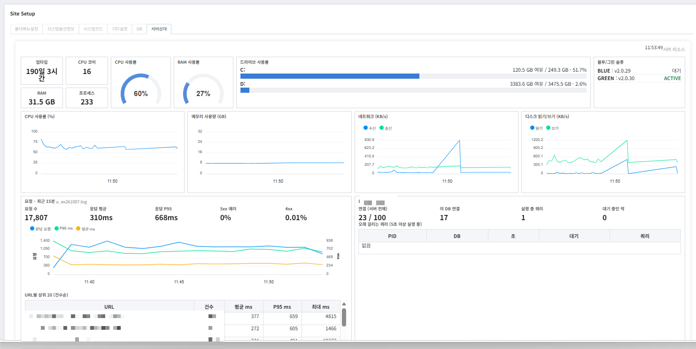

주요 업무
- 운영 성능 개선운영 MES 평균 API 응답 400ms대 → 95ms(약 76%↓), CPU 하루 평균 57% → 30%.
- 쿼리 튜닝(N+1 해소, 조회 범위 축소 등)
- DB 커넥션 재사용(Persistent Connection)으로 요청당 연결 수립 비용 제거
- Django 템플릿 캐시 로더(cached.Loader) 적용으로 템플릿 처리 시간 최대 86% 단축
- 동기식 조회 → 비동기 처리로 전환해 사용자 체감 레이턴시 최소화
- FastCGI 워커 재활용 주기 조정·정적 파일 IIS 직접 서빙으로 워커 부하 감소
- 서버 장애 대응·원인 분석방화벽·리버스 프록시·백엔드 프로세스·DB 서버로 이어지는 요청 흐름과 컴포넌트 간 통신 구조를 분석하고, 계층별 로그 상관 분석으로 장애에 대응.
- 요청 단위 트레이싱(Django 미들웨어·DB 훅)으로 처리 시간을 DB·외부 DB 연동·애플리케이션 구간으로 분해해 병목·워커 포화 식별
- MES 관리자 페이지 개선, 서버 모니터링 개발어드민 페이지 역할 기반 접근 제어(RBAC) 적용, 리소스·응답 지연·DB·배포 상태 실시간 모니터링 대시보드 구축.
- IIS 블루그린 무중단 배포IIS 리버스 프록시(ARR)로 BLUE/GREEN 슬롯을 전환하는 무중단 배포 구성.
- 배포 후 smoke test 실패 시 자동 롤백
- 배포 시 화면 상태 자동 저장·복원으로 작업 끊김 방지
- CI/CD 파이프라인, Hyper-V 스테이징 환경 구축·운영온프레미스 Gitea·self-hosted runner로 MES·SCM 등 사내 서비스의 PR 검사·운영 배포·자동 롤백 워크플로를 구성하고, 운영 동일 구성(IIS+PostgreSQL)의 스테이징 환경(Hyper-V)을 구축·운영하며 파이프라인에 연결.
- 회사 홈페이지 CI/CD 구축·운영네이버 클라우드의 CentOS·MariaDB 서버에서 운영하는 회사 홈페이지(noxglobal.com)에 SFTP·SSH 기반 배포 CI/CD 파이프라인 구축·운영.
- CI 파이프라인 최적화PR 검사 시간 1분대 → 10초대.
- 의존성 환경·저장소 캐싱으로 패키지 설치·소스 체크아웃 시간 단축
- 프로파일링으로 테스트 병목 파악, 준비 단계 캐싱으로 반복 작업 제거
- 테스트 병렬 실행·중복 실행 취소
- DB 마이그레이션 자동화스키마·뷰·트리거·프로시저 변경을 테스트 환경에서 migration으로 기록하고, 운영 릴리즈 시 운영 DB에 자동 적용.
- MES 생산데이터 이상 탐지MES·ERP의 투입내역·QR·실자재 데이터에서 누락·불일치를 자동으로 찾는 검사 시스템 개발(FastAPI·React).
- MES API·Playwright로 MES·ERP 데이터를 수집해 품목·수량 기준으로 대조
- Airflow 배치 파이프라인, 멱등성(Idempotency) 보장으로 중복 실행 방지
- 라인별 누락률과 누락 시점 원본을 대시보드로 제공하고 담당자에게 메일 알림
- 레거시 PHP 서비스 취약점 진단·조치SSRF·파일 업로드 취약점을 진단해 URL 화이트리스트·업로드 디렉터리 PHP 실행 차단으로 웹셸·내부망 접근 경로 차단.
- 보안 위협 인텔리전스 기반 정책 개선CISA 위협 동향을 분석해 사내 SSL-VPN의 접근통제 위험을 보고하고, 관리자 MFA 적용·접속 IP 제한 등 정책 강화에 기여.
- 현업 커뮤니케이션·요구사항 정리공장 근무자 교육·민원 대응, 현장 요구사항을 문서로 정리해 개발팀에 전달.